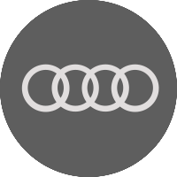
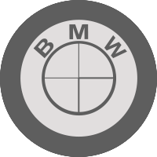
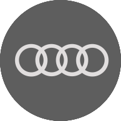
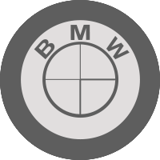

NEW BMW 2-Series Coupe Teased
BMW has confirmed it’s building a new 2-series, and we’ll see it at the 2019 LA motor show. The first teaser has dropped already, showing off the baby four-door’s new C-pillar. If you think this will be a smaller 4-series Gran Coupe – 10 points to you. It might be easy to confuse this for the 2-series Gran Tourer, but that’s a seven-seat people mover. After the reveal in November 2019 in Los Angeles, the 2-series is planned to go on sale in the spring of 2020.
What do we know about the 2-series?
It’ll use the UKL2 front-wheel drive platform like the new 1-series, X1 and X2 SUVs and the Mini Countryman. Although it’s primarily designed as a front-wheel drive car, there will be the option of BMW’s xDrive all-wheel drive system. We’re afraid the rear-driven layout will be no more from this generation. The BMW 2-series Gran Coupe reportedly carries the model codename F44, and will be approximately 4.5 metres in length – similar to that of the Audi A3 Saloon. While the camouflage doesn’t give much away, a ‘two-eyes’ headlamp design reminiscent of the classic BMW 2002 has been rumoured. In a statement, BMW also makes note of ‘fuel consumption, CO2 emissions and electric power consumption figures’ have been done in the usual EU regulation format. The mention of electric consumption could hint at plug-in or electric variants. Given the 2-series will be on the same platform as the Mini Countryman, a plug-in 2er like the Countryman Cooper S E ALL4 hybrid could be offered.
Select Category

 


